Start it
# from the repository root
dotnet run --project src/ChartPilot.ApiOpen http://127.0.0.1:5080/.
The API listens on 5080 in every environment and binds loopback only — it
refuses to start on a non-loopback address. If src/chartpilot-web/dist has been
built, the same process serves the GUI; otherwise build it once with
npm install && npm run build in src/chartpilot-web.
For frontend development run npm run dev instead and use
http://127.0.0.1:5173/, which proxies /api to the API on 5080.
The two ports never collide.
ChartPilot needs helm on the machine, but never a kubeconfig.
It renders and analyses charts; it does not contact a cluster. That is what makes it safe
to point at production charts from a laptop.
The empty state
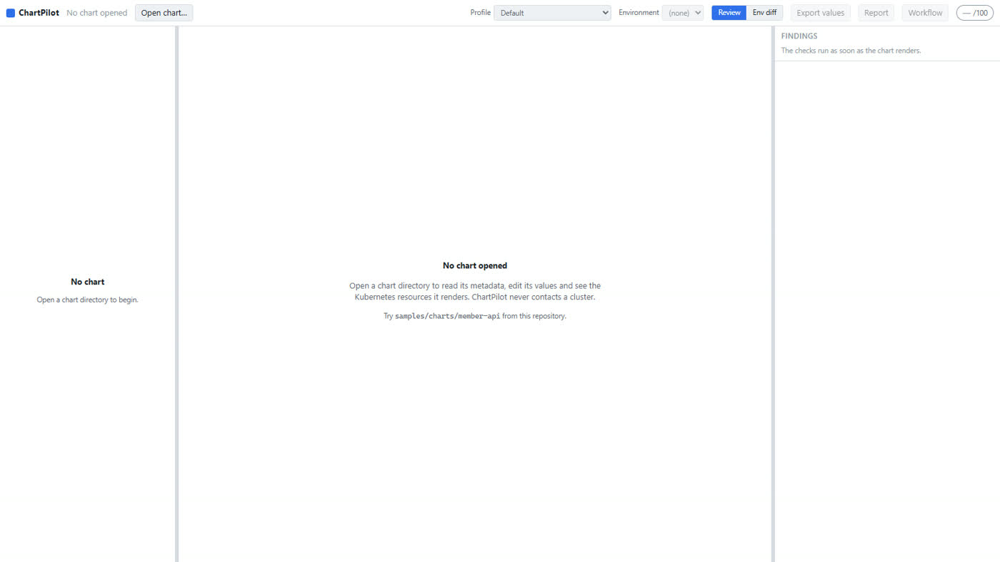
Left
Chart overview, then the tree of Kubernetes resources the chart actually rendered.
Centre
The values editor, toggled with the rendered manifest. Cause and effect on one screen.
Right
Findings grouped by severity, then the score broken down by category.
The header carries everything that changes what you are looking at: the chart, the Profile, the Environment, the Review / Env-diff switch, three export buttons, and the score.
Open a chart
Click Open chart…, then Browse….
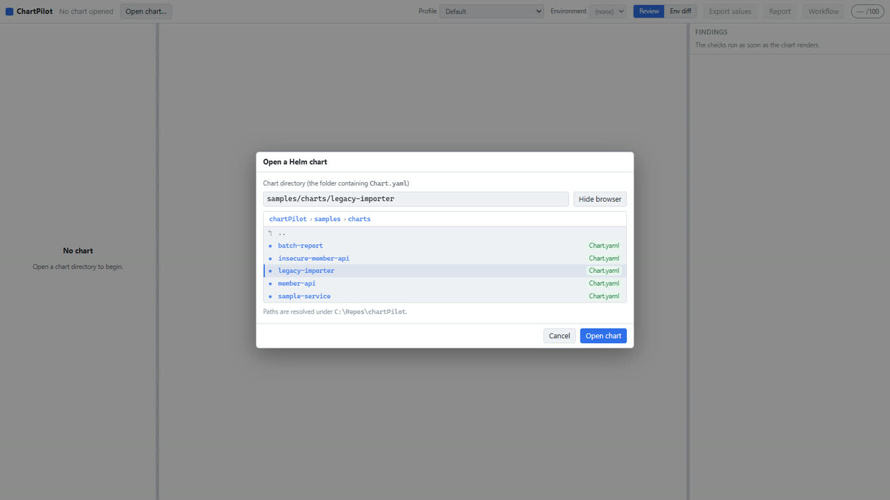
A browser cannot hand a server an absolute path — neither a file input nor the File System Access API exposes one — so ChartPilot walks the folder tree server side and shows it here.
- Single click a chart folder to select it, double click to open it immediately.
- Any other folder navigates into it; the breadcrumbs walk back out.
- You can still type or paste a path — browsing just fills the same field.
-
Everything resolves under the allowlist root shown at the bottom of the
dialog. Set
CHARTPILOT_ALLOWLIST_ROOTto point it at your own repositories.
For this walkthrough, open samples/charts/legacy-importer — a deliberately bad chart.
Read the chart
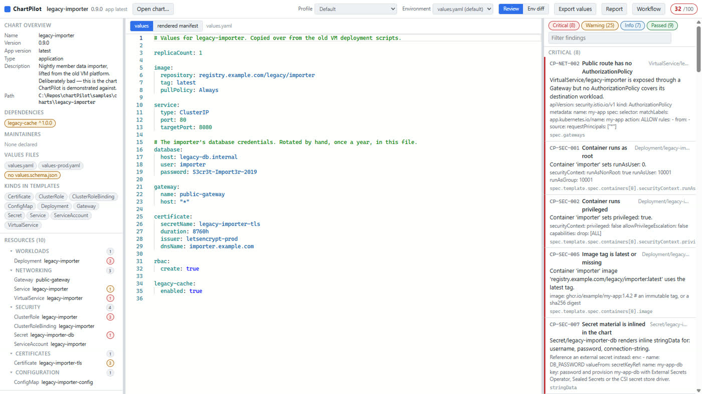
Opening a chart runs helm template immediately and evaluates every check, so the
whole screen populates at once.
-
Chart overview — name, version, appVersion, dependencies (unpinned ones
flagged), maintainers, the values files it found, whether it ships a
values.schema.json, and the kinds its templates can emit. - Resources — what was actually rendered, grouped as Workloads, Networking, Security, Certificates and Configuration. The number beside each resource is how many findings it carries.
- Findings — grouped Critical Warning Info and Passed, with a filter box.
- Score — overall, plus one score per category.
Passed checks are shown too. An empty findings list means every check ran and passed — the panel says so explicitly, rather than leaving you to wonder whether anything was evaluated at all.
Work a finding
Click any finding.
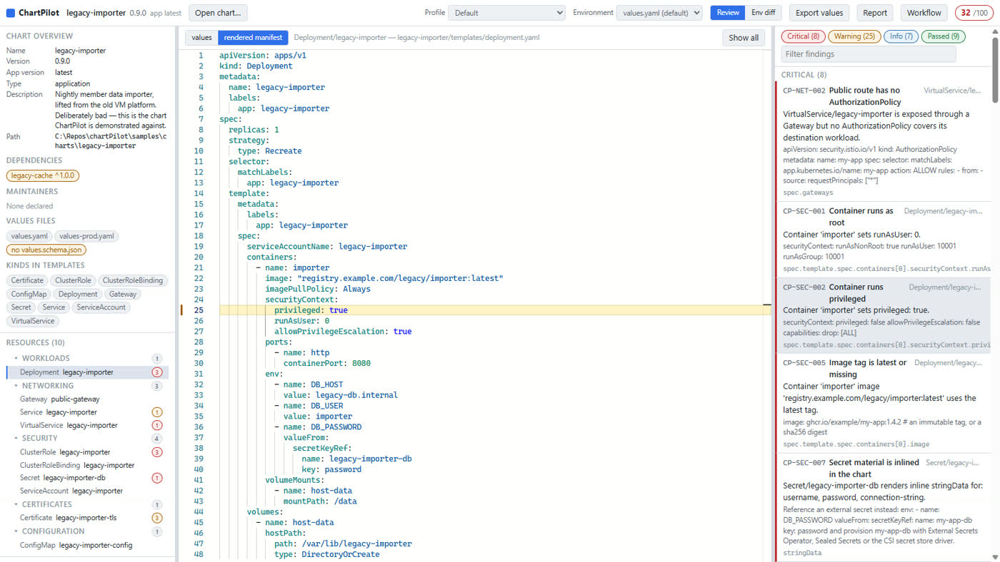
privileged: true.Each finding carries four things:
- The rule id —
CP-SEC-002, stable, and the same id the CLI and CI report. - What is wrong, naming the resource and the container.
- A remediation snippet you can paste — the actual YAML that fixes it.
- The YAML path it applies to.
When you do not understand a finding
Click What should I do? on any finding.
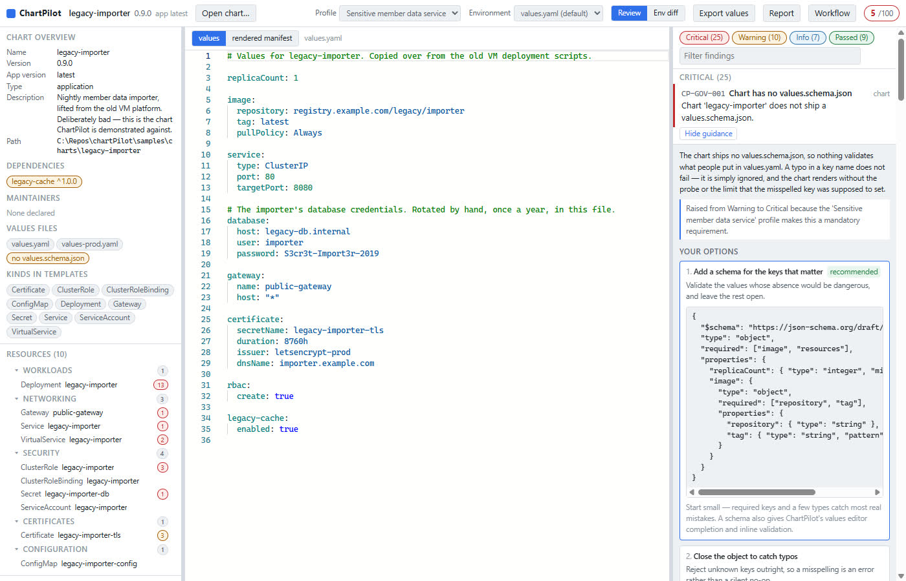
- What this means — the finding restated without jargon, for a reader who has not met this rule before.
- Why this severity — when the profile or the data classification raised it, the exact sentence saying so: "Raised from Warning to Critical because the 'Sensitive member data service' profile makes this a mandatory requirement."
- Your options — two to four concrete ways out, each with its YAML and, importantly, its trade-off. One is marked recommended so there is always somewhere to start, and the last is often an honest waiver with an expiry date, because deciding to accept a risk is a real answer.
All of it ships with ChartPilot — no model call, no network, no API key. The CLI prints
the same guidance under --explain, and the Markdown report carries the
options for every critical finding, so a pull-request reviewer sees the same choices you
did.
The advice is written in Kubernetes terms, which are the same in every chart. It cannot know where your particular chart exposes a setting, so on a hand-rolled chart you translate the last step into your own values keys.
| Prefix | Covers |
|---|---|
CP-SEC | root containers, privilege, capabilities, secrets, RBAC, NetworkPolicy |
CP-REL | probes, requests and limits, replicas, disruption budgets, update strategy |
CP-NET | Istio: gateways, authorization policies, mTLS, timeouts, retries |
CP-CERT | cert-manager: renewal windows, durations, issuers, dangling TLS secrets |
CP-OBS | metrics, standard labels, ownership, logging, correlation |
CP-GOV | schema, pinned dependencies, classification, helm lint |
Change the profile
The Profile dropdown picks a golden path. Switch
legacy-importer from Default to
Sensitive member data service:
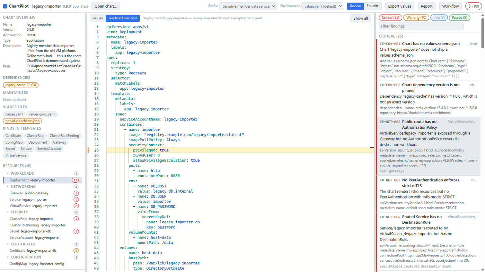
| Default | Sensitive member data | |
|---|---|---|
| Overall score | 32 / 100 | 5 / 100 |
| Critical | 8 | 25 |
| Warning | 25 | 10 |
A profile does not run different rules — it promotes severities on the same catalogue. Missing a NetworkPolicy is a warning for a sandbox service and a critical finding for one holding member data. That is why the two numbers can differ this much without a single line of the chart changing.
The footer of the score card always states what produced the number:
env default · profile Sensitive member data service · classification Unclassified.
A chart can also declare its own classification in values, which tightens the checks further:
platform:
dataClassification: sensitive-personal-data
exposure: internalEdit values, watch the manifest change
Switch the centre pane to values.
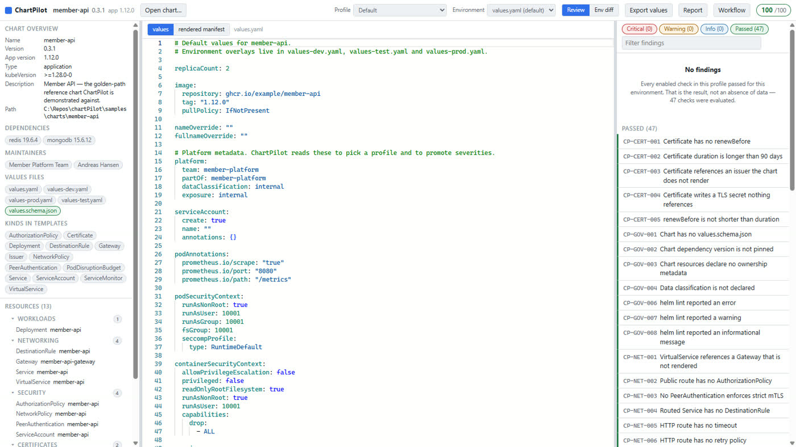
Your edits live in an in-memory draft. ChartPilot never writes to your chart directory — use Export values when you want the edited file back.
Change something — replicaCount: 2 to 5 — and switch to rendered manifest:
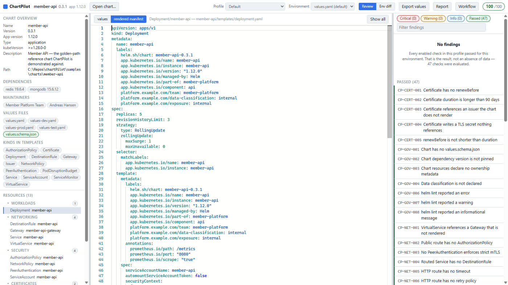
400 ms after you stop typing, ChartPilot re-runs helm template, re-parses the
manifests and re-runs every check. If your YAML is momentarily invalid, or a template fails,
Helm's stderr appears in an error panel under the editor — with the failing file and line
linked, so you can click straight to it.
Use the Environment dropdown to change which values file is the base
(values.yaml, values-prod.yaml, …). Everything re-renders and
re-scores.
Compare environments
Click Env diff in the header.
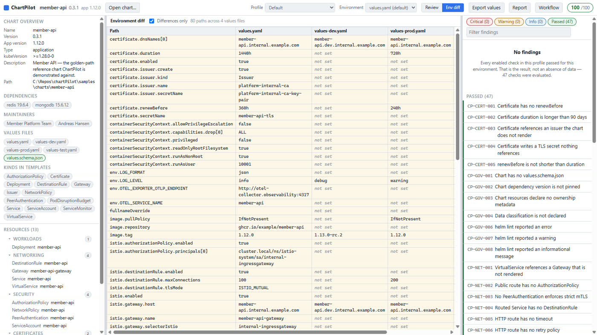
This is the view that answers is prod actually stricter than dev? Here
env.LOG_LEVEL goes debug → info → warning, image.tag is a release
candidate in dev but pinned in prod, and istio.destinationRule.maxConnections
doubles.
Anything set in only one environment shows as not set in the others — which is usually where the surprises are.
Get the review out of the tool
Three buttons in the header, each opening a dialog you can copy from.
Export values
The edited values as YAML, ready to paste back into your repository.
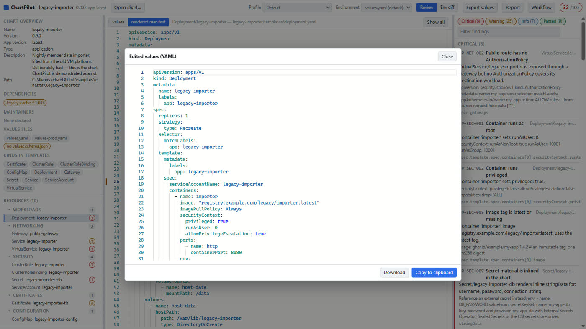
Report
The full review as Markdown: score table, rendered resources, critical findings, warnings and recommended actions — written to be pasted into a pull request as-is.
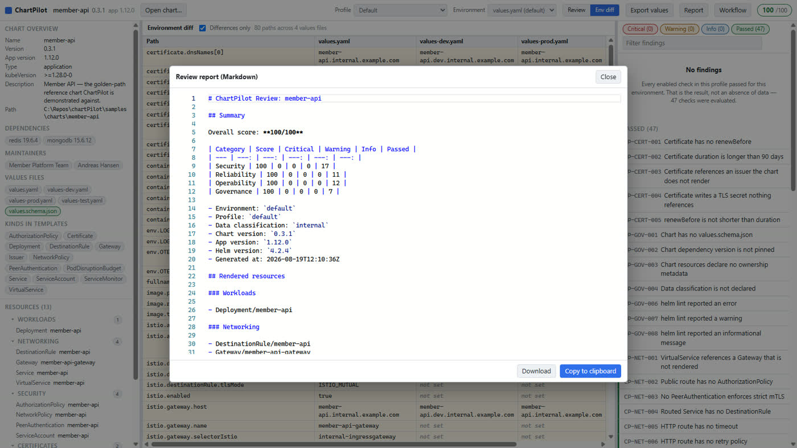
Workflow
A GitHub Actions workflow for this chart: lint, render, run chartpilot check
against the profile you selected, then deploy per environment.
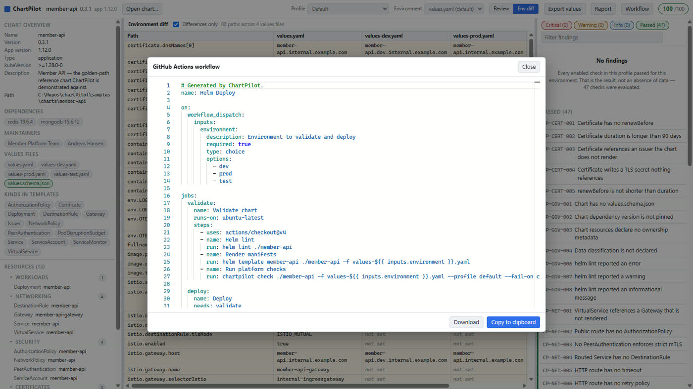
A first session
-
Open
samples/charts/member-apion the Sensitive member data service profile — the golden-path reference chart. It scores 100/100, so you can see what good looks like before you see what bad looks like. -
Open
samples/charts/legacy-importeron the same profile. It scores 5/100. Read the criticals top to bottom; each one names a real production risk. - Fix one in the values editor and watch the score move.
- Export the report, and compare it against what your own charts would produce.
Keyboard and mouse
| Action | How |
|---|---|
| Close a dialog | Esc |
| Open the typed chart | Enter in the path field |
| Select a chart folder / open it | single click / double click |
| Jump to a finding's line | click the finding |
| Show one resource instead of the whole manifest | click it in the resource tree |
| Resize the panes | drag the separators between them |
Troubleshooting
“Helm is not available”
The banner gives you the install command (winget install Helm.Helm). ChartPilot
looks for the binary in configuration, then PATH, then the usual install
locations, and reports what it found at GET /api/v1/environment.
“Chart is outside the allowlist root”
Charts must live under the allowlist root. Point it somewhere wider:
CHARTPILOT_ALLOWLIST_ROOT=C:\Repos dotnet run --project src/ChartPilot.ApiA render fails
The error panel shows Helm's stderr verbatim, including the template and line. That is Helm's own message — ChartPilot does not reinterpret it.
Nothing renders, but there is no error
The chart's values may have every optional resource disabled. Check the values editor for
enabled: false flags.